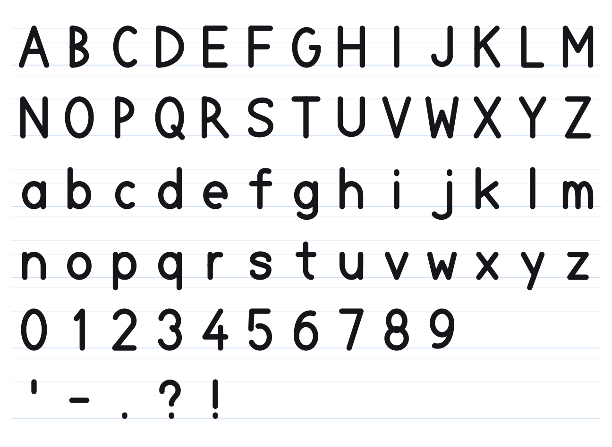
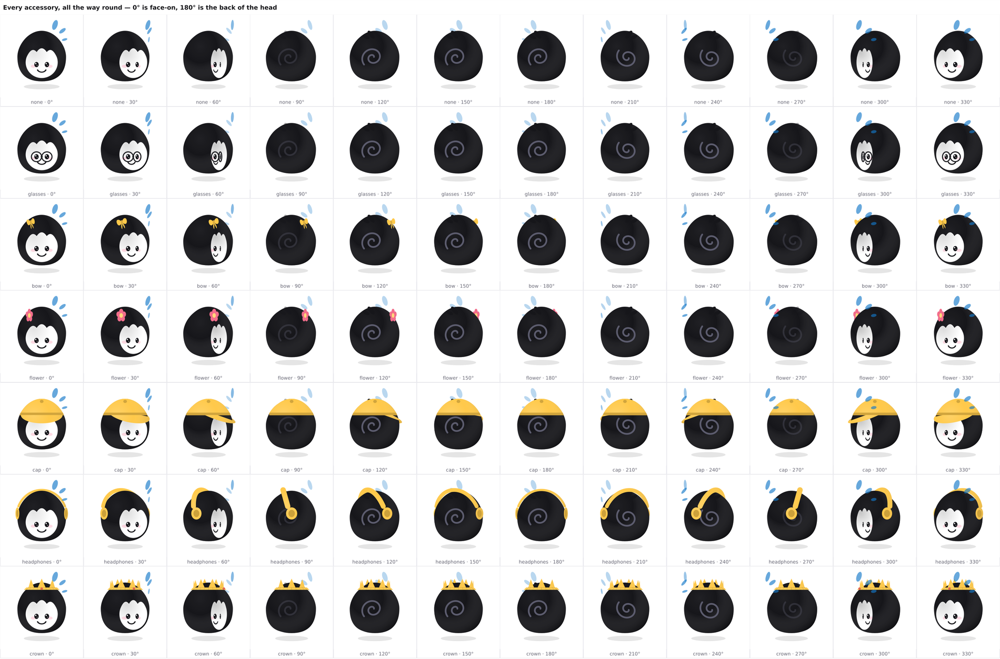

A procedural 2.5D character rig for Canvas2D and SVG. No image assets, no runtime dependencies — the character is mathematics.
Arcs, ellipses and Bézier curves, evaluated per frame from about fifteen geometry constants. That one decision is what makes the rest possible: it renders identically at 24 px in a toolbar and at 2000 px on a projector, it deforms rather than snapping between fixed frames, and the same drawing code that runs at 60 fps also emits real SVG geometry — so exported art cannot drift from what ships.
import { mount } from 'spelling-buddy'
const { buddy } = mount('#buddy', { theme: 'ink', size: 240 })
buddy.express('thinking') // states — persist until changed
buddy.react('correct') // events — play once, then restore
buddy.spell('cat') // domain — letter cards, articulated
buddy.trace('g') // teach — how the letter is formedLetters are drawn, not set in a font — monoline strokes in the order and direction a hand writes them. Tracing came almost free from that: a monoline path is the pen's centreline, so the coordinates that draw an "A" also describe how to write one. A filled-outline font cannot tell you that.

An accessory lives in the head’s own frame and is rotated with it, so turning away puts part of it behind the skull and the rest out past the silhouette — a cap keeps its crown from behind and shows its peak on the far side, a band wraps rather than floats, a crown stays a ring at every angle. Depth sorts; it does not fade. Solid things do not dissolve mid-turn.
The sheet below is generated by npm run sweep and is the check:
every accessory, every pairing, a full 360°, both pitch extremes, all twelve
skins. Every defect this set has had was invisible at the two angles anyone
checks by hand, and obvious here.
